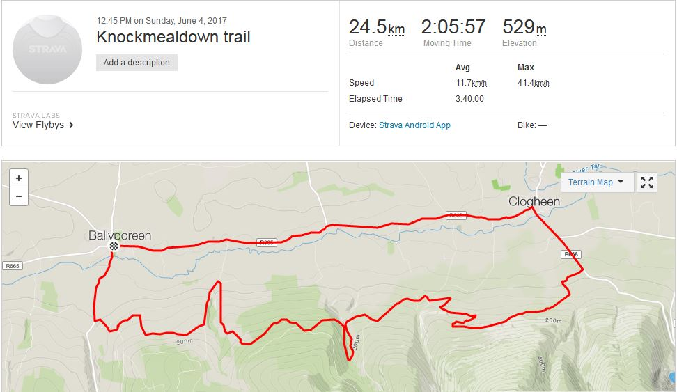

The Knockmealdown Trail is a walking trail from Ballyporeen to Newcastle on the side of the Knockmealdown mountains. Below are some pictures as we cycled some of the trail. There are some challenging climbs on the part we did as far as Clogheen. We returned by road to Ballyporeen. Looking forward to returning to possibly walk the entire trail sometime. Simply follow the red arrows from Ballyporren or Newcastle and enjoy some fantastic scenery and views.
